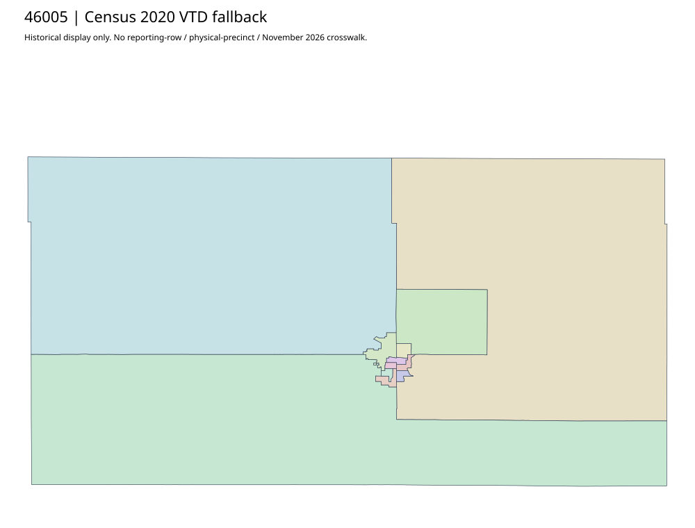

304 ordered indexBeadle | 46005
Official county homepage Voter Information leads to SOS, not a county precinct map. Its actual First District interactive-map client was acquired but exposes no proven precinct-native layer in this bounded inspection. Complete state general/runoff polling-place PDFs are administrative rosters, not county polygons; Census2020 fallback retained.
7 priority / 9 full historical observations. Parent is a summary ancestor, not additive to leaves. No physical feature matches or current reporting crosswalk approved.
Acquired shared-parent assets
No complete county precinct-map original acquired from this bounded chain. Use qualified fallback; roster/landing/error bodies are retained as evidence.
Census2020 fallback
12 native historical VTD features. Entire785-feature ZIP original retained once, all66 counties. Yankton has one countywide VTD. No current/reporting allocation. complete original gzip

Full binary/attribute/geometry QA
Observed authority/acquisition routes
Complete SOS authority fields including original blank/masked values: parent inventory. No contacts were sent.
Ordered full children
- Precinct 5 | 1223 source votes | priority
- Precinct 1 | 1089 source votes | priority
- Precinct-7 | 927 source votes | priority
- Precinct 2 | 895 source votes | priority
- Precinct 3 | 772 source votes | priority
- Precinct 6 | 771 source votes | priority
- Precinct 4 | 718 source votes | priority
- Precinct 9 | 313 source votes | remainder
- Precinct 8 | 302 source votes | remainder